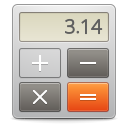

<!-- TODO: A About Screen -->

<!-- sobre -->
<about>
</img>
<h1>Calc</h1>
<h2>a simple sientifc calculator</h2>
<text> Created by Gustavo <br> Made in <link href=https://electron.atom.io>Electron®(Javascript/HTML/CSS)</link></text>
<br><link href="https://www.github.com/MrMarukesu/calc">Codigo Fonte</link>
</about>
<!-- modos -->
  <ul>
    <li><a class="left" href="calculator_screen.html">Calc</a></li>
    <li><a href="estatistic_screen.html">Estatistica</a></li>
    <li><a href="probability_screen.html">Probabilidade</a></li>
    <li><a class="right" href="about_screen.html">Sobre</a></li>
  </ul>

<!-- CSS -->
<link rel="stylesheet" type="text/css" href="../styles/about_style.css" media="screen" />
